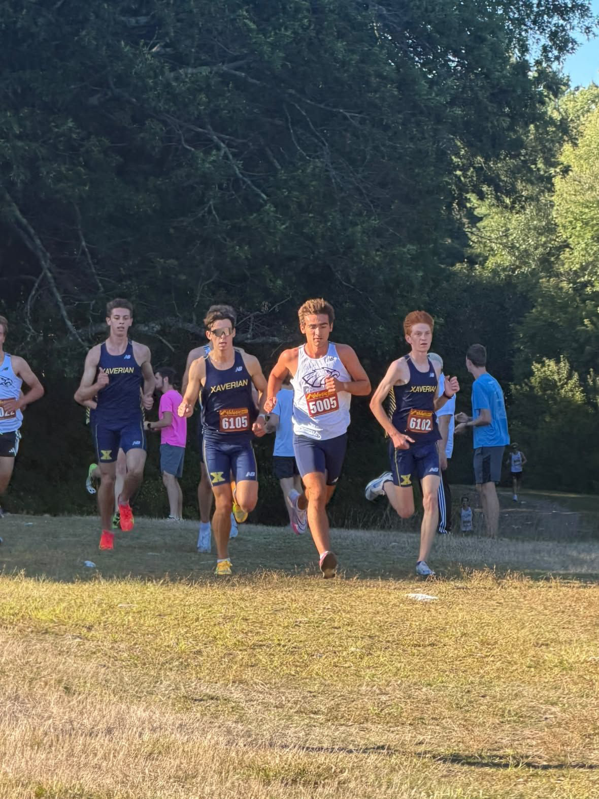
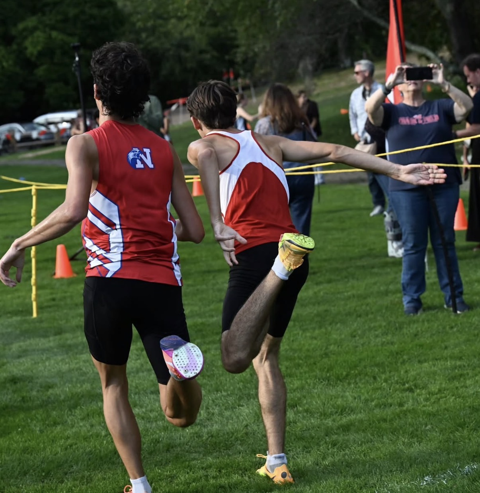
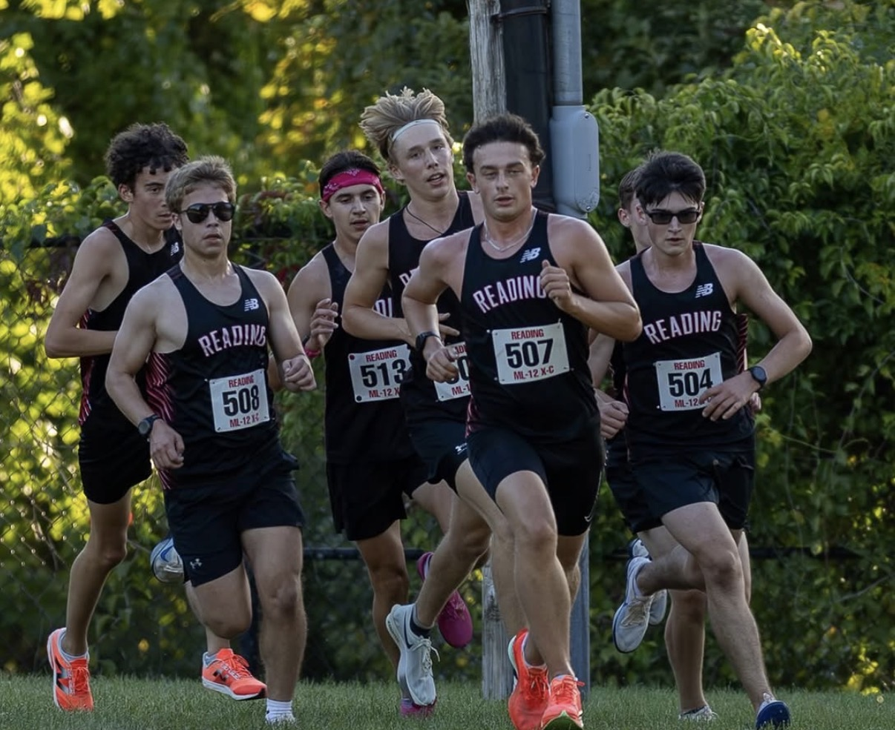
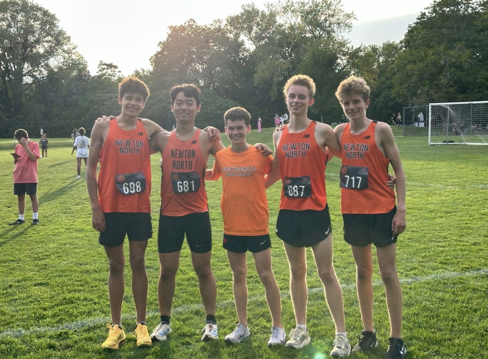
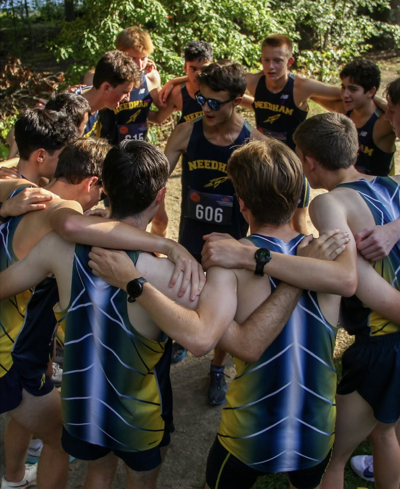
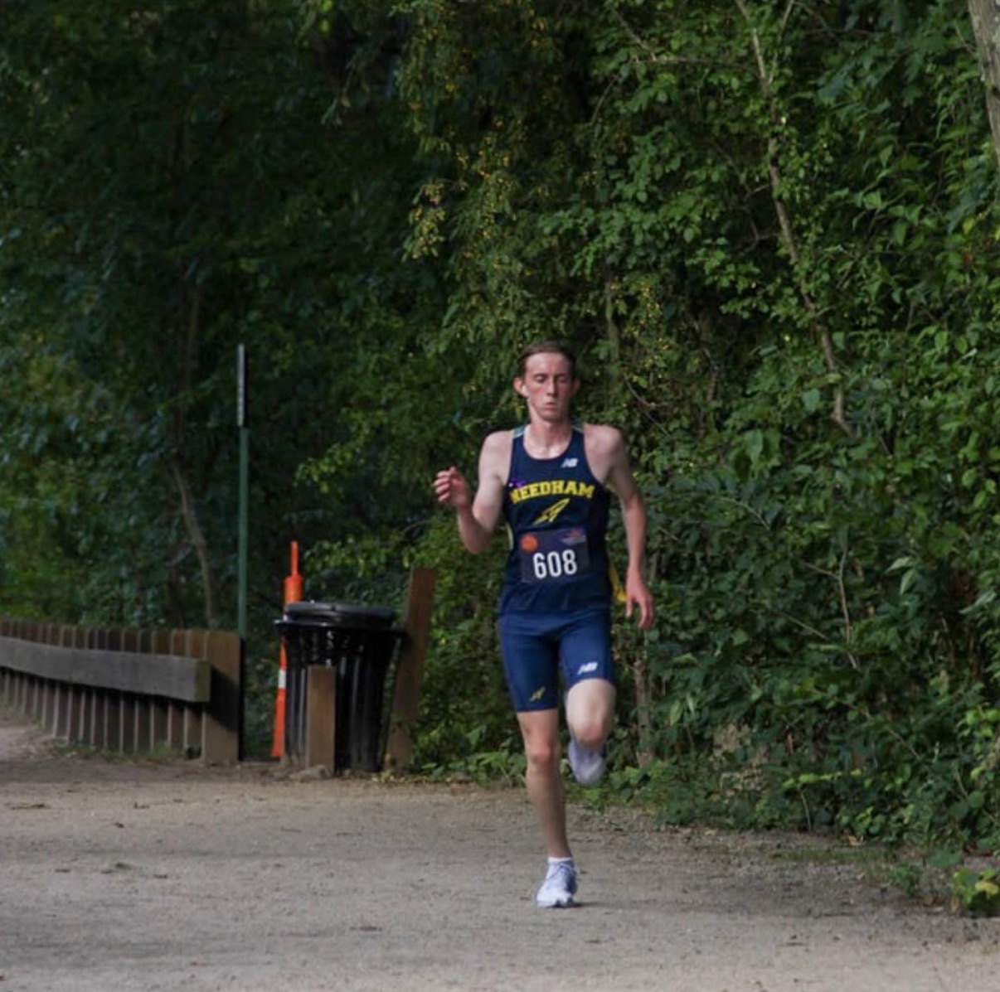
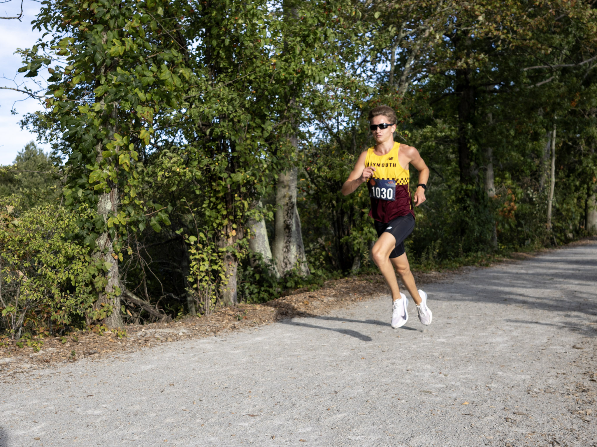

Xaverian @ #7 St. John’s Prep
One of the major storylines surrounding the Catholic Conference has been the hype around next week's matchup between St. John’s Prep and BC High. However, it seems like Xaverian wants in on the action.
The boys from Prep appeared to underestimate Xaverian and looked to have tried to tempo this meet, but it almost went completely the other way. The final score was tied 28–28, with St. John’s Prep winning on the sixth-runner tiebreaker.
Xaverian’s Marco Petrino (16:54) and Alex Armstrong (16:56) went 1–2. After that, three Prep runners came through, led by conference sleeper Mateo DeOrio. DeOrio (16:59) led Henry McDonnell (17:03) and Sam Valentine (17:04). Xaverian’s Emile Brodeur (17:20) then outkicked St. John’s Prep’s Oliver Hawes (17:21).
Scott Feeney (17:25), Cormac Barry (17:28), Liam Callahan (17:38), and Luke Herman (17:45) rounded out the groups for both squads. Callahan ended up playing the biggest role of the meet, outpacing Xaverian’s sixth runner and securing the tiebreaker for Prep.
Although it's still early in the season, we still haven't seen the full potential St. John’s Prep seemed to have on paper entering the year. Between this performance and the Clipper Relays, there are definitely still some questions. The boys have their biggest matchup of the season next week, and against BC High, we'll finally get a better look at just how good this Prep team can be.

St. John’s Prep’s Henry McDonnell leading the Xaverian runners through the race.
#9 Natick and Milton @ #3 Brookline
We finally got our first real look at the four-time defending state champions, and this team looks ready to compete.
After dealing with injuries throughout the track seasons, Liam Hartmann (15:08) looks to be fully recovered after taking the win on the 2.76-mile course. Hartmann's performance becomes even more impressive when you consider that he beat teammate Ibrahim Abdel-Dayem (15:11), who ran four seconds faster than Hartmann in the two-mile last spring.
Then came Brookline's pack of five juniors, all finishing within just 15 seconds of each other. The biggest surprise was Mathew Ritter (15:45), who led the pack and finished seven seconds ahead of Nam Danh (15:52). Elias Thommason (15:55), Noah Karp (15:59), and Toby Paradise (16:00) rounded out Brookline's top seven.
At first, having Brookline at #3 in the preseason may have looked a little high. Their performance this week tells us something different. Even in the middle of September, Brookline already has two elite runners up front and an incredibly tight pack behind them. This team looks ready to challenge the best the state has to offer.
Natick also showed significant improvement from last week. Having Callum Doyle (15:22) and Declan Hava (15:27) back in the lineup reaffirms their position as one of the top teams in the state. Doyle and Hava placed third and fourth overall, both getting ahead of Milton’s Robert Beato (15:36). After Beato, Benjamin Gidelson (15:40) placed sixth. Natick then had Kai Vickers-Richard (16:19), Dylan Cooke (16:20), and Alex Forte (16:23) come through around 16:20.
Milton had a few other standout runners behind Beato. Their #2 runner, Nate Turner (16:14), placed 12th overall, while Gideon Toth (16:34) placed 18th.

Kai Vickers-Richards (right) edging out teammate Dylan Cooke (left) at the finish line. Photo: Greg Richard.
#4 BC High · #8 Reading Memorial · #10 Groton-Dunstable
Three of the top 10 teams in the state opened their individual seasons this week. However, all three started against weaker competition, causing each squad to take a more conservative approach.
BC High looked to be the most conservative of the three, sitting four of its top six returners. Colin Kurtz (17:33) and Joseph Hayes (17:39) went 1–2. After that, Terrance McGhee Jr. (18:58), the transfer from Boston Latin Academy, placed fifth overall and led the rest of the BC High squad. After two races, we still haven't seen Owen Geagan. If he isn't healthy for next week's matchup against St. John’s Prep, that could become a major disadvantage for BC High.
Over in Reading, they showed us that their entire team is healthy and ready to go. The senior trio of Max King (17:47), Finn Johnson-Houlihan (17:48), and Andrew Princic (17:48) led the Rockets to the sweep. Colin Herlihy (17:49), Colin Caroll (17:49), Curran Healy (17:50), and Declan Grant (18:00) rounded out the squad's top seven. Watch out for Reading. Those times don't come close to describing this team's actual potential, especially considering how tightly their entire group ran together.
Groton-Dunstable also took a very conservative approach. Their senior trio of Greyson Duane, Andrew Kosiba, and Micah Pierantozzi all crossed in 17:53. Ashton Duane (18:00) and Cameron Duane (18:30) followed. Groton-Dunstable is currently our #1 team in Division 2, but there are multiple teams lurking right behind them.

Reading boys tempoing their way to a win over Burlington.
Wellesley @ #6 Newton North
Disclaimer: Although Athletic.net suggests this course is a 5K, Cold Spring Park is definitely one of the faster courses in the state.
Even against one of the best teams in the state, Wellesley looked impressive. Daniel Goldberg (16:13) led the team with a second-place finish, only behind Costello. Nate Flynn (16:31) placed fourth overall and broke up Newton North's main pack. Wellesley then had Conor Foley (16:56), Peter Mahoney (17:04), and Jonas Wigneswaran (17:17). This Wellesley squad looks much more ready than it did last week, and we're excited to see what they can do against other Bay State Conference teams like Walpole, Natick, and Needham.
Unpredictable. That's the best word to describe Newton North's lineup over these first two weeks. Not unpredictable in terms of talent, but unpredictable in terms of who is going to step up.
Ryan Costello lowered his MA #1 5K from 15:52 all the way to 15:36. Alex Daly (16:20) matched his time from last week to finish third overall. Newton North then put five more runners inside the top 11: Mathew Gallo (16:37), Jamie Evans (16:43), William Kenneally (16:54), Eli Billings (16:59), and Ken Matsuoka (17:04). Evans, Kenneally, Billings, and Matsuoka weren't even part of Newton North's top seven last week.
Newton North now has an incredible amount of runners around or below the 17-minute barrier, with even more sitting just behind them. Even if Newton North isn't the best team in the state right now, they may very well be the deepest.

Newton North XC team celebrating its win over Wellesley.
Weymouth & Braintree @ Needham
The Weymouth and Needham rivalry got very heated at Cutler Park. Needham sat two of its top five runners, giving Patrick Geagan and the Weymouth squad an opportunity to pull off an upset on Needham's home course. Patrick Geagan (16:21) won the meet overall in what appeared to be more of a tempo effort.
Needham’s Connor Bobbin (16:53) then outkicked Braintree’s Kyle Koca (17:00) and Weymouth’s Andrew Himmer (17:10). Needham’s Cash Lindsley (17:36) and Duncan Alexander (17:41) followed in fifth and sixth overall before two more Weymouth runners crossed.
Although Weymouth has great top-end talent, its fifth runner, Antonio Souto (19:25), finished behind Needham's seventh. That depth ultimately allowed Needham to edge Weymouth 28–29. It's a little bit of revenge for Needham after losing this same matchup to Weymouth by one point last year. Still, this was a strong showing from Weymouth and suggests their loss to Framingham last week might not tell the full story of this team.

Needham team huddling around Cash Lindsley (middle) before the race. Photo: Zach Kristall.

Needham’s Connor Bobbin on his way to a second-place finish at Cutler Park. Photo: Zach Kristall.

Weymouth's Patrick Geagan on his way to a first place finish at Cutler Park. Photo: Nolan Morrell
Wakefield @ Winchester
Winchester opened its season Tuesday, and this team looks deep. They had their entire top seven below the 17:40 barrier, with only 31 seconds separating all seven runners. Tyler Bernstein (17:07) led the squad, while Winchester's fourth through seventh runners all came through between 17:33 and 17:38. The Middlesex League should watch out for Winchester.
Duxbury @ Marshfield
Although we originally thought the Patriot League wouldn't have any standout teams this year, Marshfield is happily proving us wrong. This week, their entire top five crossed together in 17:28. Conor Rightmire, Cal Kennedy, Archie Meberg, Peter Adams, and Emmett Aufiero combined to sweep Duxbury.
Rightmire and Meberg have already shown that they can go much faster than that, running 16:45 and 16:59 at the MarshVegas Classic last weekend. Marshfield looks all-in on making a run at the Patriot League title, and we're excited to see what this team can accomplish.
Hopedale vs. Whitinsville Christian
In what looked like a very similar situation to Xaverian vs. St. John’s Prep, Hopedale barely escaped with a 29–30 win. Whitinsville Christian’s Michael Voss (18:06) and Nathaniel Voss (18:10) went 1–2 ahead of Hopedale’s Quinn Cook (18:25). James Bourougrim (18:38) then came through before the strength of Hopedale's pack took over.
Ben Stone (18:44), Cedric Authur (18:44), Connor Fitzgibbon (18:44), and Ethan DeWolf (18:45) all crossed essentially together, putting Hopedale's entire scoring pack ahead of Whitinsville Christian's fourth runner and securing the one-point victory.
If this week has taught the MIAA anything, it's that you can't always go into a meet expecting to hit a tempo. Some teams can be a lot faster than what meets the eye.
#12 Oliver Ames & Arlington
#12 Oliver Ames and Arlington both opened their seasons this week. However, we were unable to find complete results for either team.